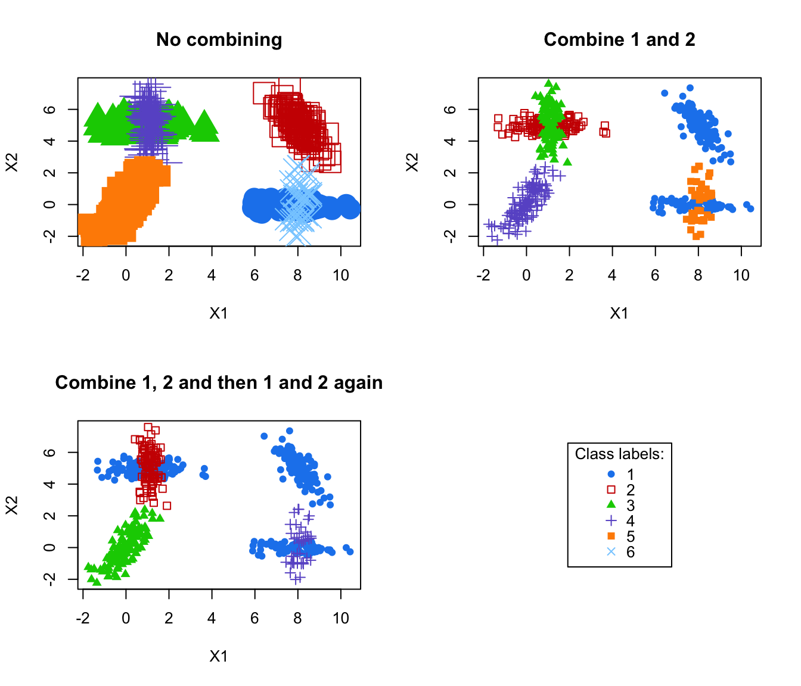

Plot Classifications Corresponding to Successive Combined Solutions
combiPlot.RdPlot classifications corresponding to successive combined solutions.
Arguments
- data
The data.
- z
A matrix whose [i,k]th entry is the probability that observation i in the data belongs to the kth class, for the initial solution (ie before any combining). Typically, the one returned by
Mclust/BIC.- combiM
A "combining matrix" (as provided by
clustCombi), ie a matrix whose kth row contains only zeros, but in columns corresponding to the labels of the classes in the initial solution to be merged together to get the combined solution.- ...
Other arguments to be passed to the
Mclustplot functions.
Value
Plot the classifications obtained by MAP from the matrix t(combiM %*% t(z)), which is the matrix whose [i,k]th entry is the probability that observation i in the data belongs to the kth class, according to the combined solution obtained by merging (according to combiM) the initial solution described by z.
References
J.-P. Baudry, A. E. Raftery, G. Celeux, K. Lo and R. Gottardo (2010). Combining mixture components for clustering. Journal of Computational and Graphical Statistics, 19(2):332-353.
Examples
# \donttest{
data(Baudry_etal_2010_JCGS_examples)
MclustOutput <- Mclust(ex4.1)
MclustOutput$G # Mclust/BIC selected 6 classes
#> [1] 6
par(mfrow=c(2,2))
combiM0 <- diag(6) # is the identity matrix
# no merging: plot the initial solution, given by z
combiPlot(ex4.1, MclustOutput$z, combiM0, cex = 3)
title("No combining")
combiM1 <- combMat(6, 1, 2) # let's merge classes labeled 1 and 2
combiM1
#> [,1] [,2] [,3] [,4] [,5] [,6]
#> [1,] 1 1 0 0 0 0
#> [2,] 0 0 1 0 0 0
#> [3,] 0 0 0 1 0 0
#> [4,] 0 0 0 0 1 0
#> [5,] 0 0 0 0 0 1
combiPlot(ex4.1, MclustOutput$z, combiM1)
title("Combine 1 and 2")
# let's merge classes labeled 1 and 2, and then components labeled (in this
# new 5-classes combined solution) 1 and 2
combiM2 <- combMat(5, 1, 2) %*% combMat(6, 1, 2)
combiM2
#> [,1] [,2] [,3] [,4] [,5] [,6]
#> [1,] 1 1 1 0 0 0
#> [2,] 0 0 0 1 0 0
#> [3,] 0 0 0 0 1 0
#> [4,] 0 0 0 0 0 1
combiPlot(ex4.1, MclustOutput$z, combiM2)
title("Combine 1, 2 and then 1 and 2 again")
plot(0,0,type="n", xlab = "", ylab = "", axes = FALSE)
legend("center", legend = 1:6,
col = mclust.options("classPlotColors"),
pch = mclust.options("classPlotSymbols"),
title = "Class labels:")# }
